Tentang Desa
Desa Susukan adalah salah satu desa di
Kecamatan Susukan, Kabupaten Banjarnegara.
Halaman ini memuat gambaran umum desa, sejarah singkat, visi-misi,
serta potensi dan arah pembangunan desa.
Mengenai kami, Desa Susukan Banjarnegara
“SUSUKAN BANGKIT MENUJU DESA YANG AGAMIS,
BERMARTABAT, CERDAS & SEJAHTERA” (ABC - S).
- Mewujudkan masyarakat Desa Susukan yang berkualitas, kreatif, inovatif dengan memanfaatkan teknologi.
- Mewujudkan pemerintahan Desa Susukan yang handal untuk peningkatan pelayanan masyarakat.
- Mewujudkan kehidupan yang kondusif, dan agamis.
- Memperkuat ekonomi kerakyatan yang berbasis keunggulan lokal desa.
- Mekanisme sewa menyewa tanah kas desa dengan cara “lintingan”.
- Bantuan modal usaha untuk kelompok pemuda dengan sistem pinjam pakai tanah kas desa.
- Bantuan modal kerja masyarakat tidak mampu dengan pemanfaatan tanah kas desa sistem “maro”.
- Bantuan modal usaha industri rumah tangga / UMKM dengan sistem hibah.
- Dana stimulan kelompok pengajian perempuan.
- Pelatihan pemuda, perempuan, dan kelompok masyarakat lainnya.
- Pembangunan pusat perdagangan Tobong & Geblug (kios dan ruko).
- Pusat olahraga dan rekreasi keluarga di sekitar lapangan desa.
- Kantor desa & balai desa modern untuk pelayanan optimal.
- Percepatan pembangunan jalan dan irigasi.
- Revitalisasi Sungai Gumelem.
- Insentif layak untuk RT/RW.
- Bantuan sosial anak yatim, dhuafa, dan warga terlantar.
- Revitalisasi sektor pertanian.
-
Total Penduduk (Jiwa)Rekap jumlah penduduk Desa Susukan.
-
Lansia (≥ 60 Tahun)— dari total penduduk
-
produktif(18–59 Tahun)— dari total penduduk
-
Balita (0–5 Tahun)— dari total penduduk
-
Remaja (5-18 Tahun)— dari total penduduk
Struktur Organisasi Desa
Berikut adalah foto bagan struktur organisasi Pemerintah Desa
Susukan sebagai gambaran pembagian tugas dan alur koordinasi
pelayanan masyarakat.
Bagan Struktur (Foto)
Klik gambar untuk melihat ukuran penuh. Jika teks pada
foto terlihat kecil, gunakan fitur zoom pada tampilan
modal.
Tips: pakai foto resolusi tinggi agar tulisan di bagan
tetap jelas.
Perangkat Desa
Perangkat Desa Susukan merupakan unsur penyelenggara
pemerintahan desa yang bertugas membantu Kepala Desa dalam
melaksanakan pelayanan publik, administrasi pemerintahan,
pembangunan desa, serta pemberdayaan masyarakat. Dengan struktur
yang tertata dan kinerja yang profesional, perangkat desa
berkomitmen memberikan pelayanan yang cepat, transparan, dan
akuntabel kepada seluruh warga.
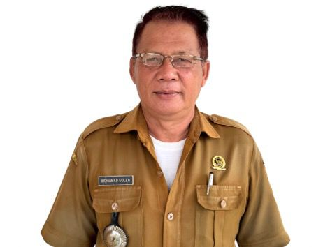
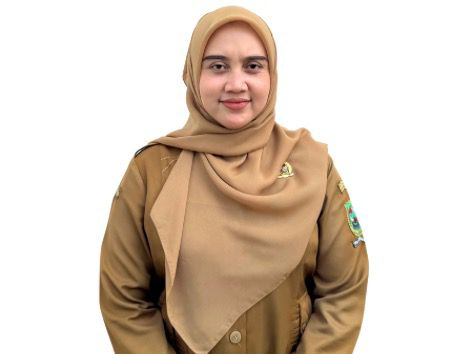
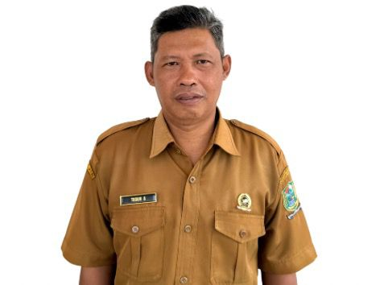
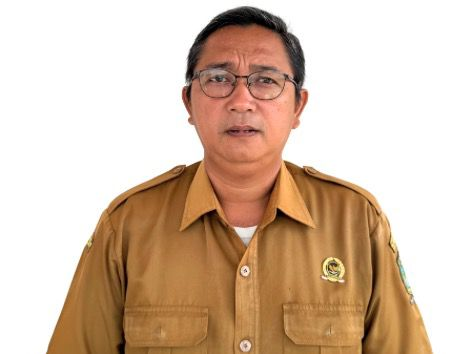
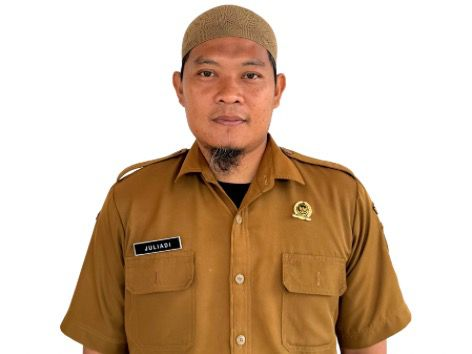
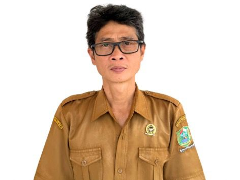
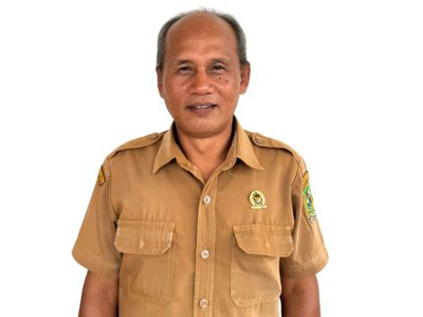
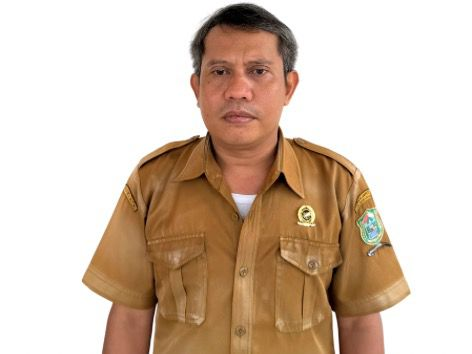
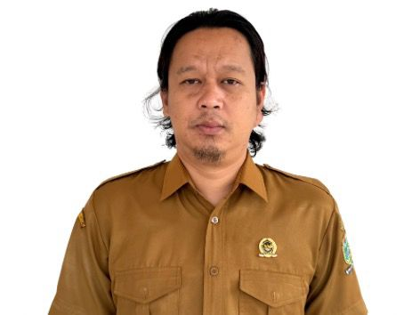
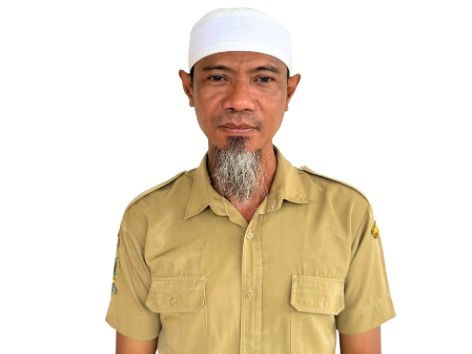
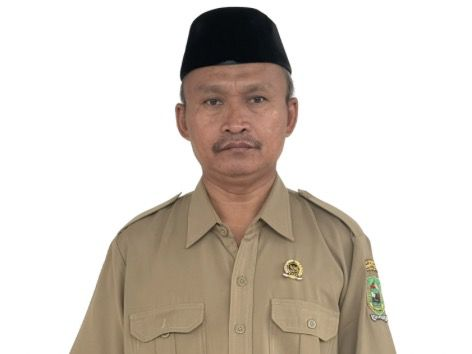
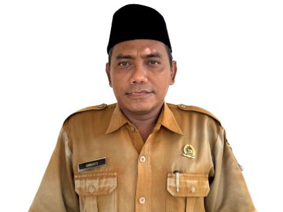
BPD
BPD Desa adalah lembaga perwakilan masyarakat desa yang
berfungsi sebagai mitra kerja Kepala Desa dalam penyelenggaraan
pemerintahan desa. BPD berperan dalam menampung dan menyalurkan
aspirasi masyarakat, membahas serta menyepakati peraturan desa,
serta melakukan pengawasan terhadap kinerja pemerintah desa guna
mewujudkan tata kelola desa yang transparan, demokratis, dan
akuntabel.
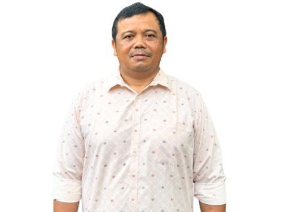
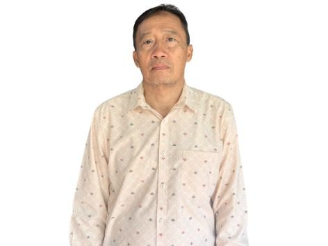
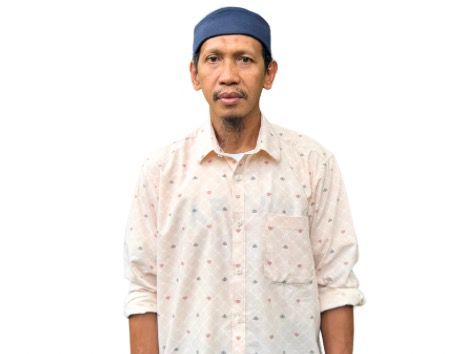
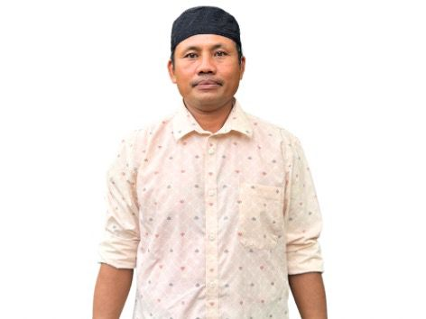
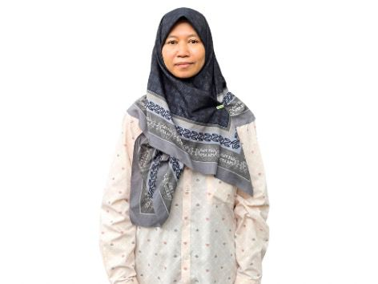
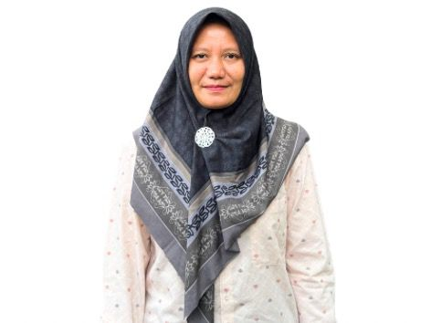
BUMDES
BUMDes adalah badan usaha yang didirikan oleh pemerintah desa
bersama masyarakat untuk mengelola potensi ekonomi desa secara
produktif dan berkelanjutan. BUMDes bertujuan meningkatkan
pendapatan desa, membuka lapangan kerja, serta mendorong
kemandirian ekonomi masyarakat melalui berbagai unit usaha
sesuai dengan kebutuhan dan potensi lokal desa.

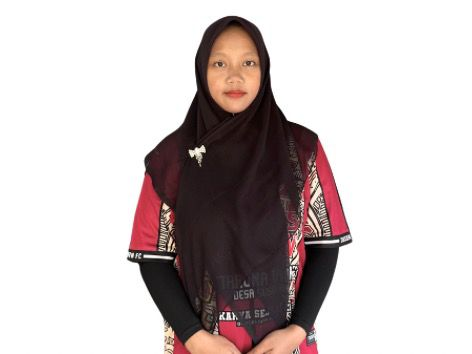
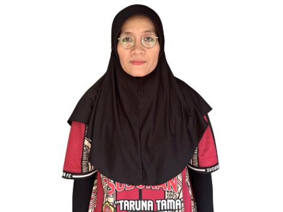
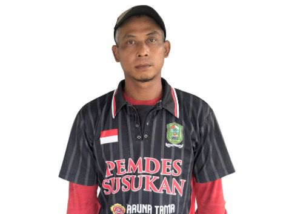
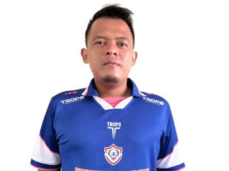
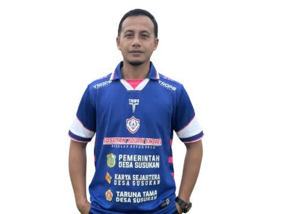
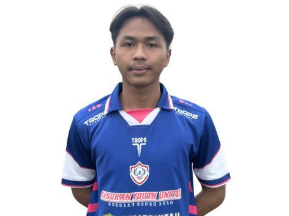
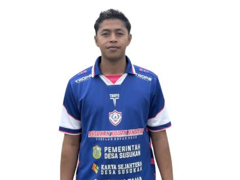
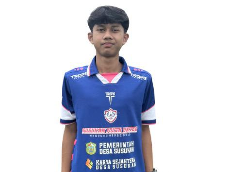
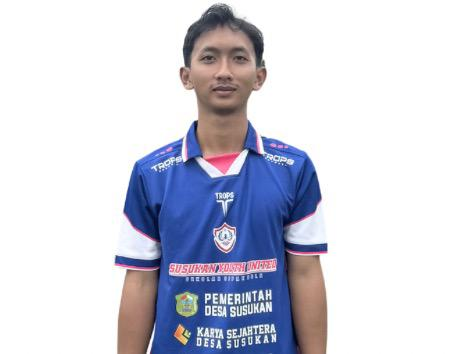
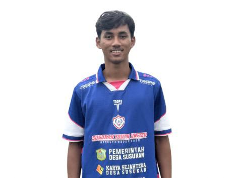
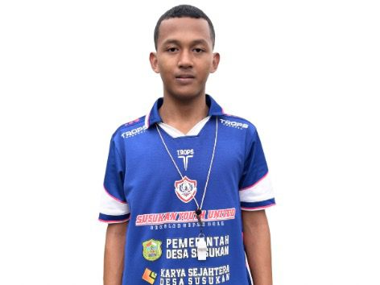
Ibu PKK dan Posyandu
PKK (Pemberdayaan dan Kesejahteraan Keluarga) bersama Posyandu
merupakan pilar penting dalam meningkatkan kesejahteraan
masyarakat Desa Susukan, khususnya di bidang kesehatan ibu dan
anak, gizi balita, serta pemberdayaan keluarga. Melalui kegiatan
rutin seperti penimbangan balita, penyuluhan kesehatan,
imunisasi, serta pelatihan keterampilan, PKK dan Posyandu
berperan aktif dalam menciptakan keluarga yang sehat, mandiri,
dan sejahtera.
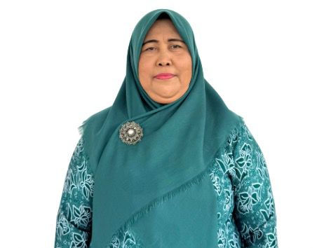
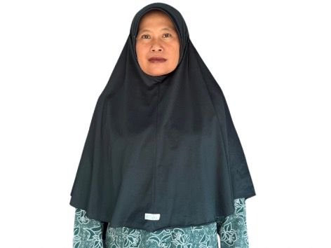

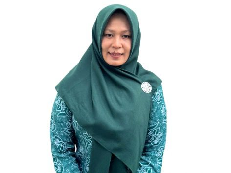
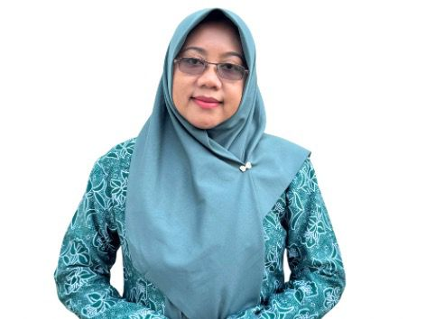

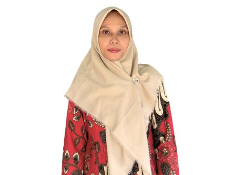
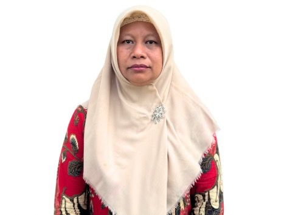
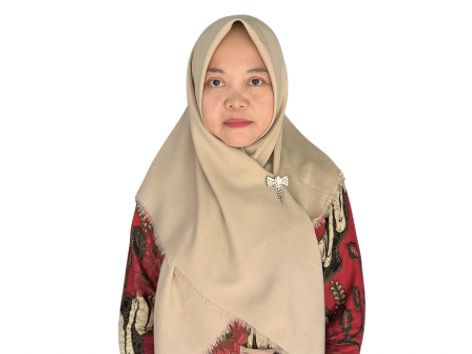
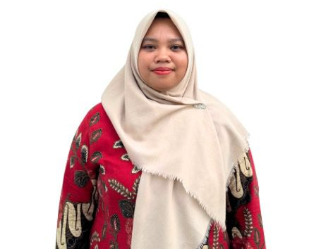
Perternakan
Peternakan kambing di Desa Susukan merupakan salah satu potensi
usaha desa yang dikelola oleh masyarakat dan didukung oleh
BUMDes untuk meningkatkan perekonomian lokal. Usaha ini berfokus
pada pengembangan ternak yang sehat dan produktif melalui
perawatan rutin, pakan berkualitas, serta pengelolaan kandang
yang higienis. Hasil peternakan dimanfaatkan untuk kebutuhan
konsumsi, penjualan, serta pengembangan usaha berkelanjutan bagi
warga desa.
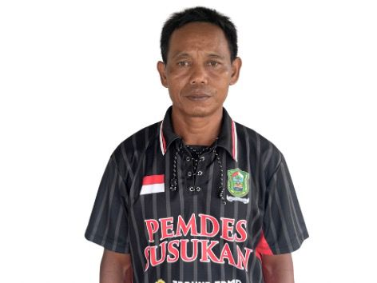
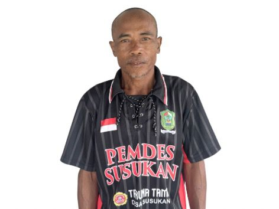
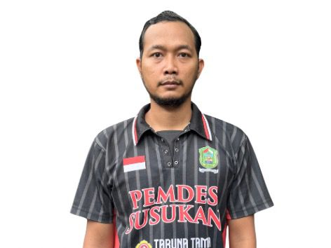
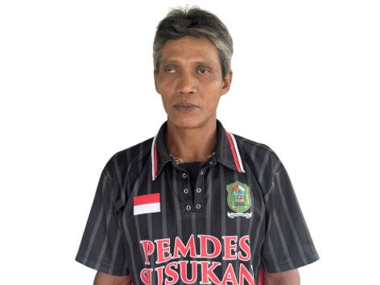
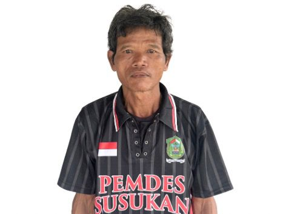
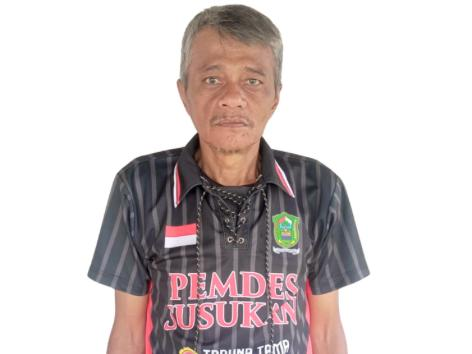
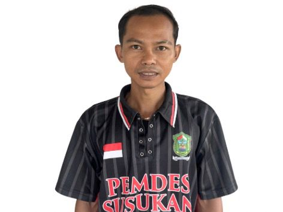
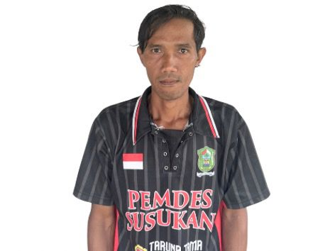
Kontak Pemerintah Desa
Kami siap melayani masyarakat Desa Susukan dengan pelayanan yang
cepat, ramah, transparan, dan bertanggung jawab. Silakan hubungi
kami untuk informasi lebih lanjut atau pengajuan layanan desa
secara online.
Hubungi Kami